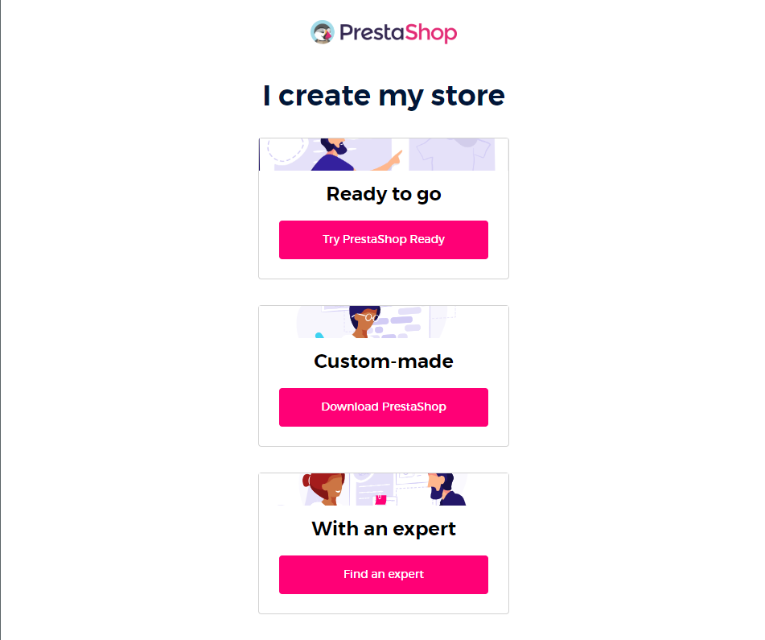
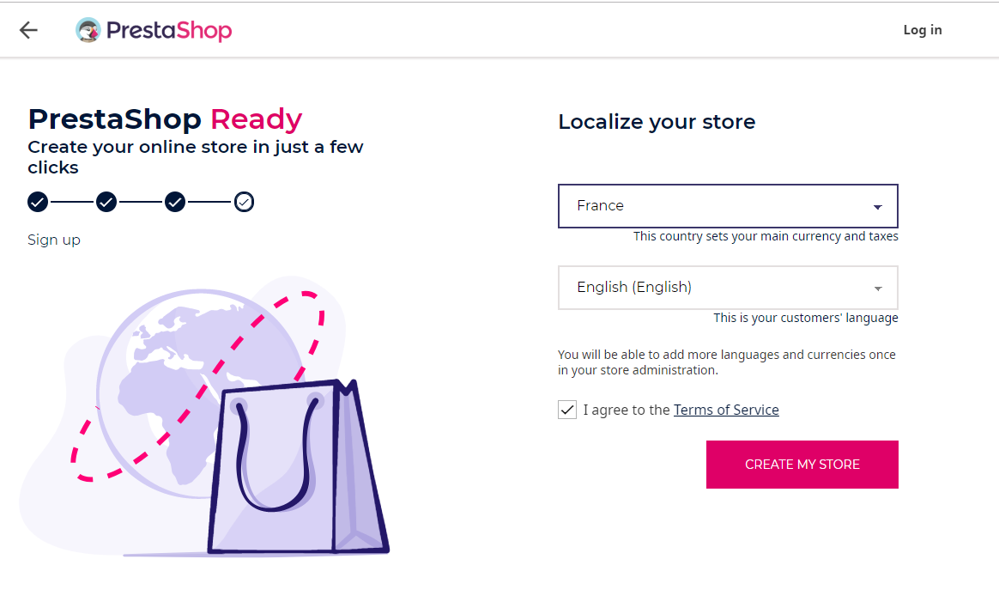
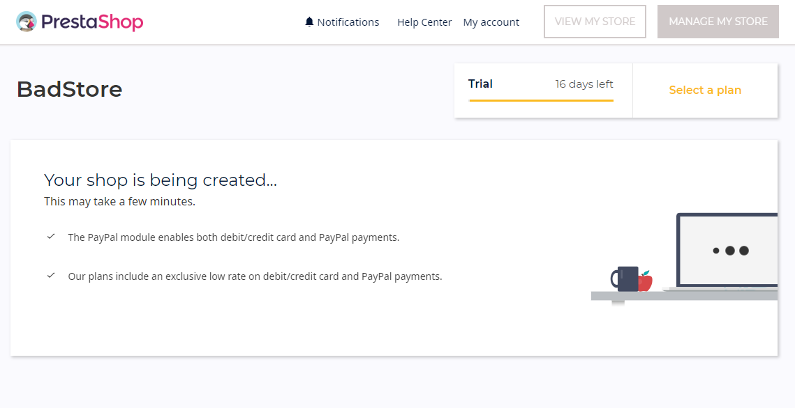
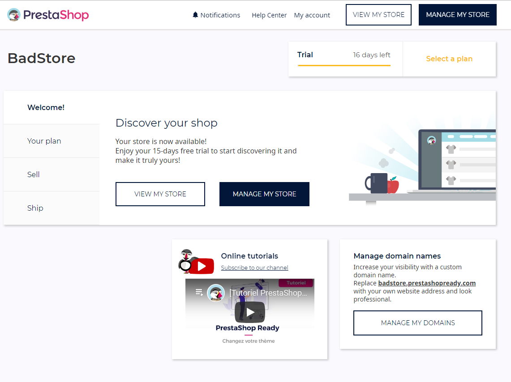
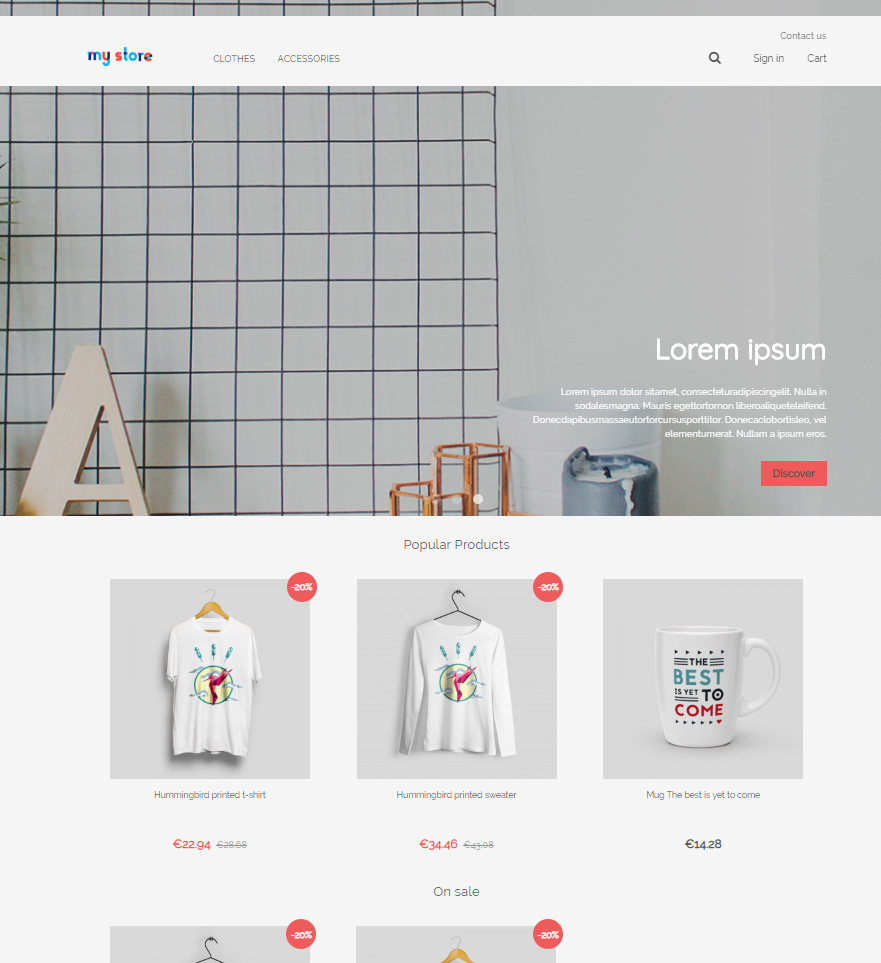
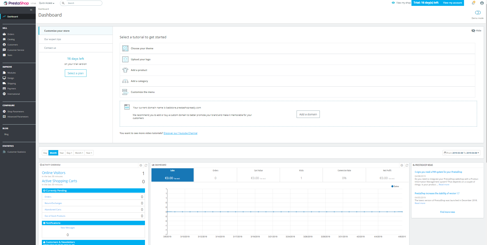

8.4.2019 Leevi Kukkonen
Prestashop-verkkokauppasivusto on netissä toimiva valmis verkkokauppapaikka, jota voidaan käyttää maksullisesti netistä, tai sitten ladattuna omalle domainpalvelimelle. Tässä dokumentissa selvitämme, miten se asennetaan ja mitä se sisältää.
Prestashopin verkkosivulla on kolme vaihtoehtoa: Ready to Go, Custom-made ja With an expert. Käymme näistä ensimmäiset kaksi, koska emme halua ottaa yhteyttä toimistoihin.
PrestaShop Readyssa ei tarvita itse tehdä juuri mitään, mutta siitä maksetaan prestashopille. Kokeilla toki saa maksuttomasti 15 päivää, mutta rekisteröityä sähköpostia voi käyttää vain kerran.
Lokalisointi luodaan automaattisesti selaimen mukaan. Tässä tapauksessa se tunnisti vain engalnnin, italian ja ranskan ja antoi nämä kielivaihtoehdoiksi.
Valinnat on nyt tehty ja sivusto on pian käytettävissä lyhyen latauksen jälkeen.
Latauksen jälkeen päävalikosta voidaan siirtyä muokkaamaan kauppaa, tutkimaan sen ulkonäköä tai valita maksutavan tuleville ajanhetkille.
Lopullinen sivu näyttää tältä oletuksena
Päävalikosta löydämme Manage your website-osion. Hyödynnämme sitä ja muokkaamme sivuamme. Vaihtoehdot ovat suhteellisen pienet, mutta värimuunnokset ovat yllättävän hyvin integroitu.
PrestaShop Ready soveltuu käyttöön vain ja ainoastaan jos haluaa vain fiksun näköisen verkkokaupan ilman että tarvitsee ohjelmoida tai hallita tietokantoja. Verkkosivun muokkaaminen tapahtuu verkossa
Sellaisena se on yllättävän hidas, eikä sen antamat vaihtoehdot ole kovinkaan syvällisiä. Lisäksi Prestashop maksaa 20 euroa/kuukausi tietokantamakuista, jonka saa omalla domainilla ilmaiseksi.
Customin asentamiseen tarvitaan nykyisessä versiossa 1.7:
Customin lataaminen toimii samalla tavalla kuin Ecommerce: Lataa zip-paketti verkosta osoitteesta:
https://www.prestashop.com/en/download
luo kansio (voit myös käyttää oman käyttäjäsi public_html:ää jos olet ottanut userdir:n käyttöön):
sudo mkdir /var/www/html/yourdir
siirrä zip sen sisälle:
mv /home/testi/Downloads/prestashop_1.7.5.zip /var/www/html/yourdir/prestashop_1.7.5.zip
Ja unzip:
unzip /var/www/html/yourdir/prestashop_1.7.5.zip
Ja avaa localhostissa osoitteessa http://localhost/
Verkossa avautuu latauspalkki, joka lataa tiedostot koneelle. Katso että kansioiden oikeudet ovat kunnossa, jos sivusto se herjaa siitä. ja silloin käy läpi että kaikki aikaisemmat vaiheet ovat kunnossa ja tarvittaessa muuta polun /var/www/html/omakansio/ oikeudet chmod ja chown -komennoilla
Seuraavaksi täytetään samat asiat kuin aiemmin Prestashop Ready:n kanssa:
Asennus suoritettu